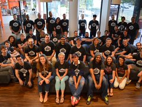

Tweets
Tweets & replies
Photos & videos
 Pinned Tweet
Pinned Tweet
The Iron Yard
@TheIronYard · Aug 12
How Far We've Come:
blog.theironyard.com/post/945325051...
 The Iron Yard
The Iron Yard
How Far We've Come
By John Saddington, People & Ops To look at the above image is mind-blowing (and that’s just one of the many campuses that we have around the country)! To think that only a few months ago...
View on web
7
17
 The Iron Yard retweeted
The Iron Yard retweeted

WordPress Charleston
@wpCHS · 19h
A few days till our #WordPress meetup w/ @HeatherSolos via @bluekeyinc & @TheIronYard: http://wpchs.org/meetups/monthly-wordpress-meetup-june-9/ … #chs